可拖拽的文献列表
列表宽度与每列列宽都能用鼠标拖动，双击列边界恢复默认；宽窄随你，阅读节奏也随你。
列表 · 拖拽不打断阅读心流，也不让资料散落。每个功能都围绕“原文可追溯”和“本地可掌控”设计。
列表宽度与每列列宽都能用鼠标拖动，双击列边界恢复默认；宽窄随你，阅读节奏也随你。
列表 · 拖拽回答自动附带原文片段与页码，点击引用即可回到 PDF 对应位置，减少“看起来对”的幻觉；长对话可用提问导航快速跳转，Ctrl + 滚轮调整字号。
AI · 引用除 PDF 外还可导入 Word（docx/doc）、Markdown 与 TXT；文本文献自动分页，大纲、高亮、摘录与笔记保持一致体验。
PDF · Word · Markdown助手、信息、笔记、高亮、大纲、摘录与任务页签可脱离主窗口，独立窗口支持置顶跟随，页码与大纲双向同步。
面板 · 多窗口暖砂、澄蓝、柔光三套浅色与暖夜、深空两套深色主题，在命令面板中搜索切换，主窗口与独立阅读面板同步更新。
主题 · 外观启动与回到窗口时自动检查 GitHub Releases；设置页内下载、校验并安装新版本，文献库显示当前版本与更新状态。
更新 · 自动统计输入/输出 Token、缓存命中率、首字延迟与生成速度，按模型与功能拆分趋势，并按可调单价估算费用。
用量 · 成本随手收集文字、链接、摘录和待办，AI 会给出归类建议，之后再慢慢整理成主题或笔记。
收集 · 整理把多篇文献聚合成一个主题，汇总建议问题、成员文献与摘录，直接进入主题内对话。
主题 · 综述框选任意区域即可翻译，保留原图、结构化译文与纯文本三种形态，历史记录随时回看。
截图 · 翻译文献、笔记、对话与截图保存在本机；API Key 以 Windows DPAPI 加密落盘，界面不回显明文。
隐私 · 安全输入学习目标，让 AI 依据库内文献生成阅读顺序、关注点与问题清单，按计划推进。
学习 · 计划把文献、摘录与问答卡片放到一张无限画布上，建立连线、分区、缩放并导出 PNG。
画布 · 关联PDF 主区与右侧 AI 工作台并行。选中文字即可高亮、摘录或直接追问，回答回到原文；工作台也可脱离为独立窗口。
Arbor 会把当前文献、选区与笔记作为上下文，回答时标注页码与引用，避免脱离原文的泛泛而谈。
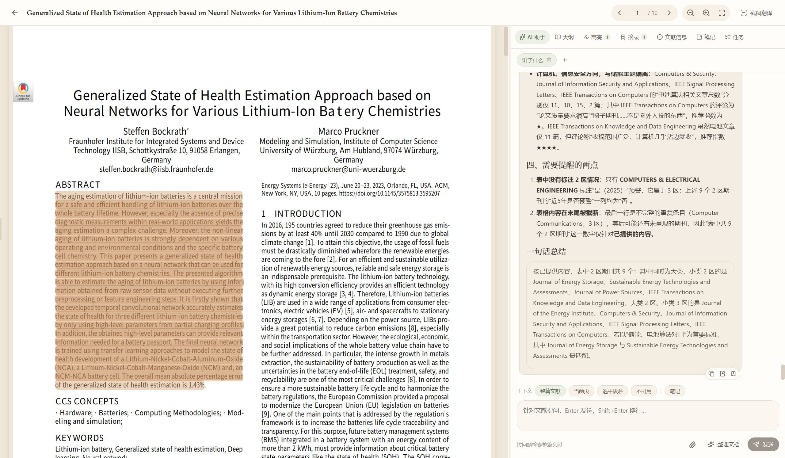
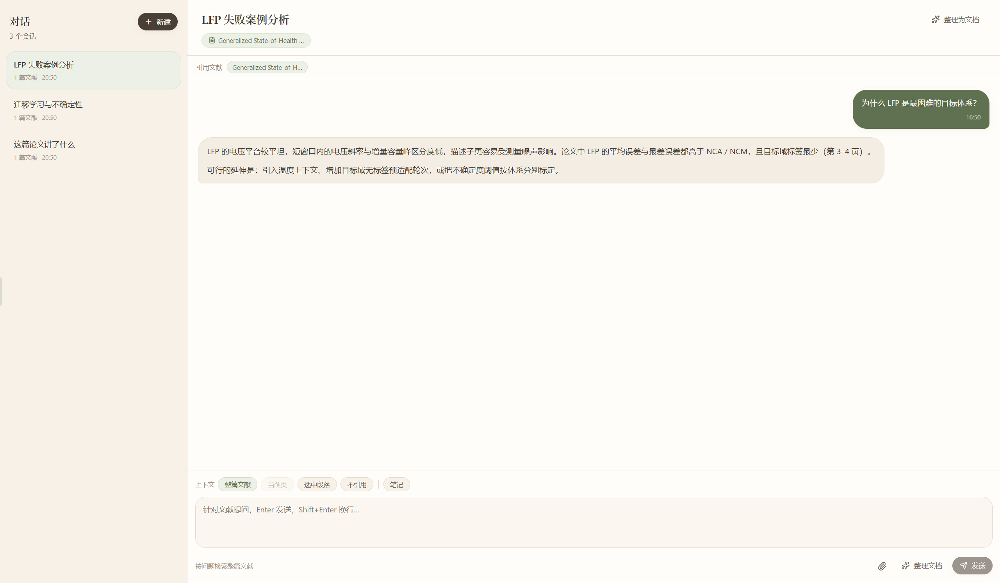
对话会携带当前文献或整库上下文，回答中给出页码引用。支持把整段对话整理为 Markdown 文档，继续写作。
灵感收集负责“接住”，研究主题负责“聚合”。零散想法不会消失，成熟后再长成主题与计划。
文字、链接、摘录、待办都可以先放进来。AI 会建议归类到分类、标签或研究主题，也可以直接转为任务。
把同类文献聚合成主题空间，自动汇总建议问题，并把成员文献作为主题对话的上下文。
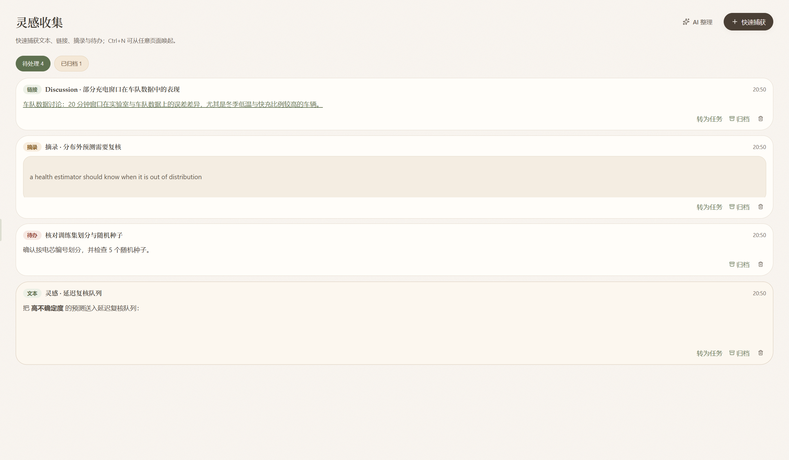
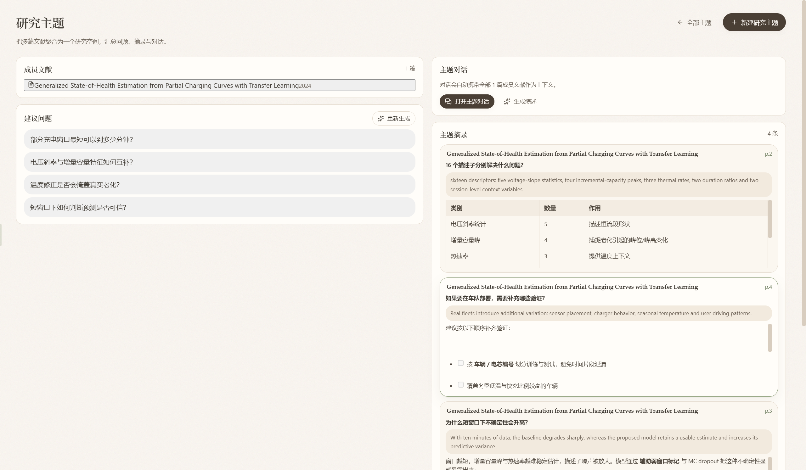
成员文献、建议问题、主题摘录与主题对话放在同一屏，点击问题即可发起携带全部成员文献上下文的对话。
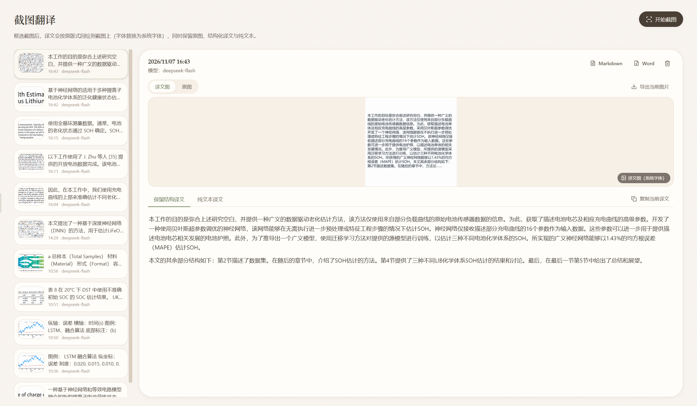
通过全局快捷键框选屏幕区域，Arbor 会保留原图并给出结构化译文与纯文本，适合论文图表、扫描页与公式密集段落。
默认本地保存，自动备份保留最近 7 份；API Key 使用 Windows DPAPI 加密，输入后不再显示明文。
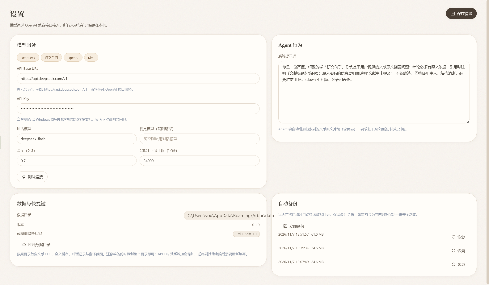
自然有机的暖色界面，支持浅色与深色。所有截图均来自真实运行的 Arbor 隔离演示库。
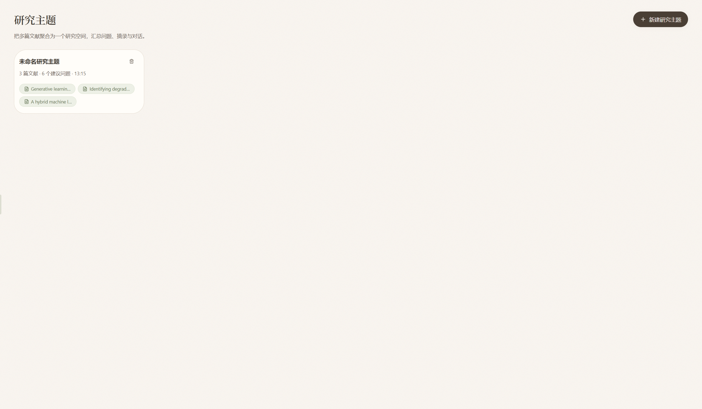
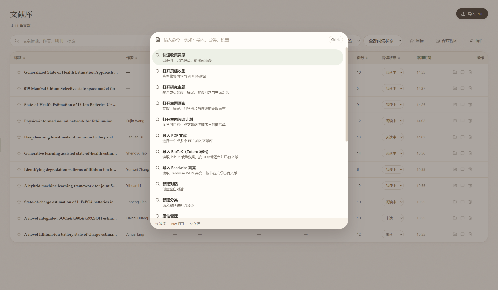
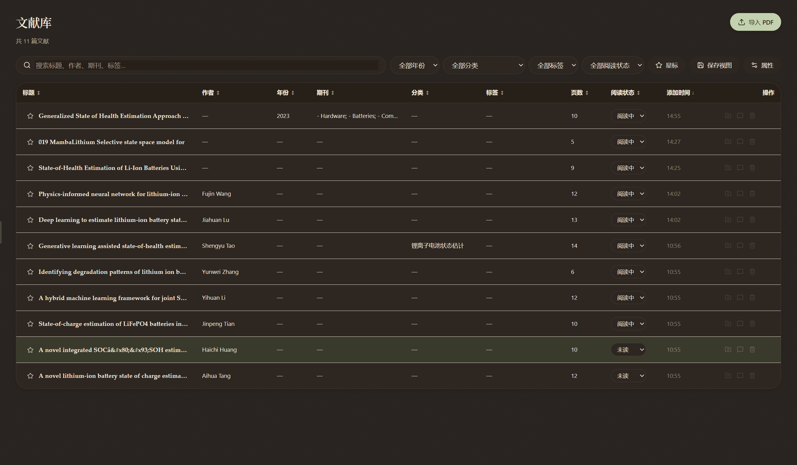
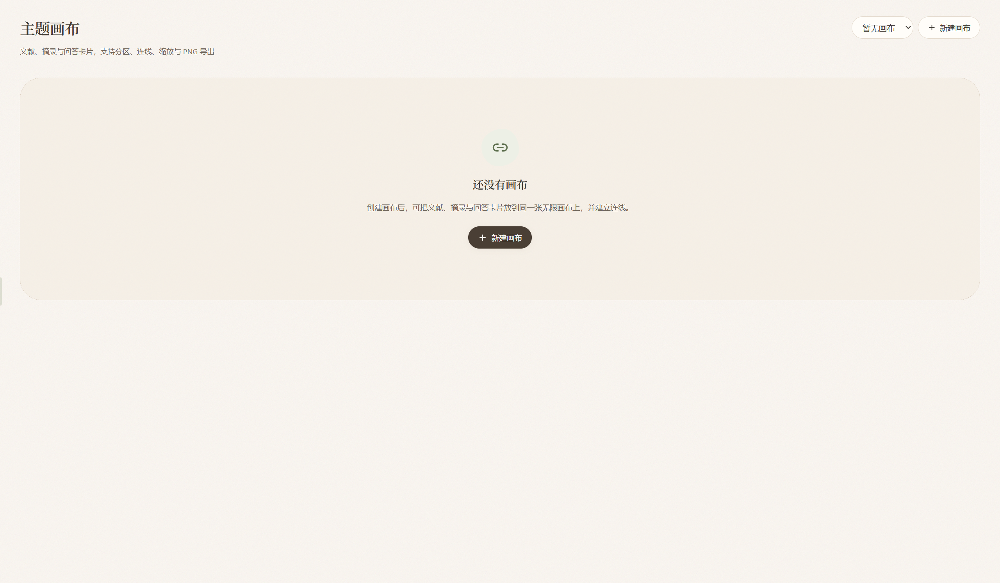
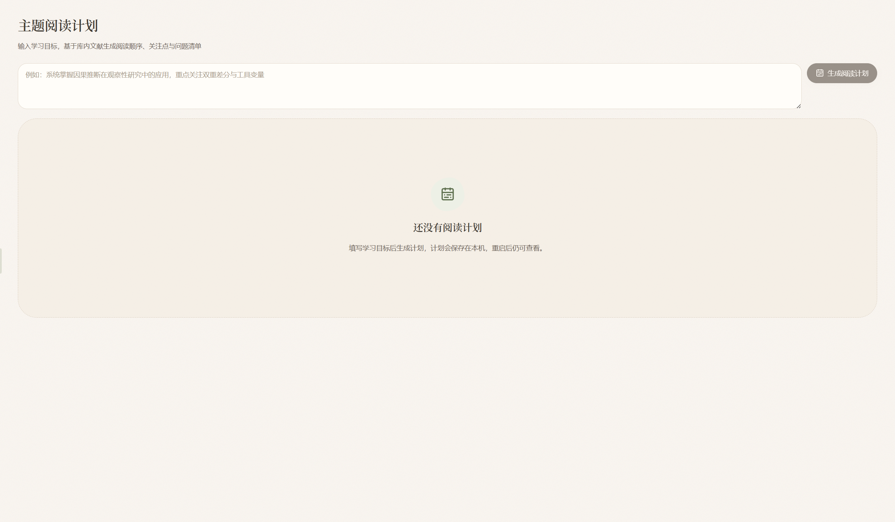
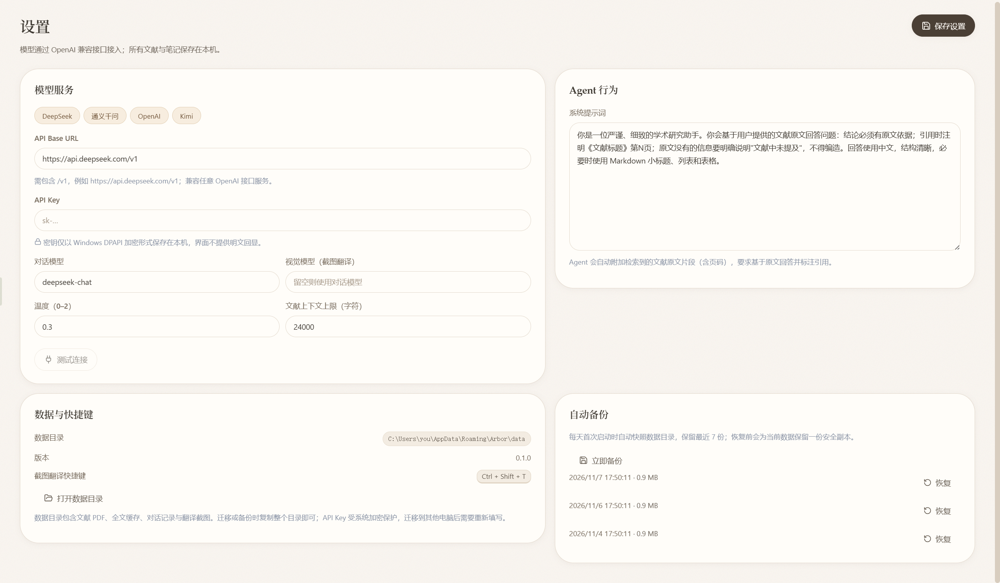
从下载到第一次可溯源的 AI 问答，通常只需要几分钟。
从 GitHub Release 下载 Windows 安装包，按向导完成安装。应用与数据均保存在本机；后续版本可在「设置 → 关于与更新」中直接升级。
打开“设置”，填写 OpenAI 兼容接口的 Base URL、API Key 与模型名，点击“测试连接”。
点击“导入 PDF”，Arbor 会自动提取全文。列表宽度与列宽可拖动调整，Ctrl+O 全局搜索。
打开文献，选中文字高亮或摘录，在右侧 AI 助手中提问；引用可跳回原文核对。